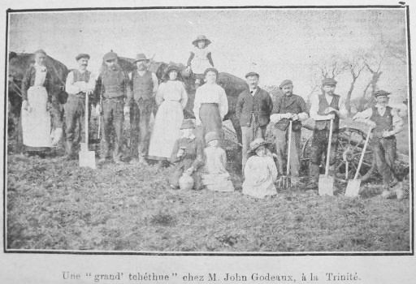

Si vos en tait d'rin, qué j'dis Lundi au matin, quand j'eumes fini d'imprimé la gazette du jour, j'ithais baillyi un coup d'main a m'n'amin, Amice Bigthé, du Huthé; ch'est anniét qui touonne. "All Right" qu'dit l'Bos, et tâchis d'lus vendre tchiq' 'Morning News' sus l'heuthe d'la bouochie." J'n'y manq'thait pon; que j'dis en m'sauvant d'vant qui changisse d'idée.
Hope là! que j'criyi a Lonore en ouvrant sa porte d'chambre (y n'tait oquo que quatr' heuthes) dors tu? Estchippe té, dèsliément, et vin t'en ov me a St. Jean! l'moto d'la gazette s'en va nos emporté!
Nos v'la don a nos moustré ferme. J'dèsjeunimes "anyhow," et tandi que j'mettais mes gaiteurs, ma fille porti eunne modgie d'tée fret et un volume de Sermons à la tête du liét a ma pouore chiethe femme - ou dormait! san preumié soumme dépis huit jours - J'nos gardimes bin d'la rèsvillyi, et pour qu'ou n'sé m'yéspéthisse pas en s'rèsvilliant toute seule j'èscrivi sus un papi qu'j'èspilli ès ridjeau du liet: "Gone au Huthé but not forgotten." et paque! nos v'la a bas ou-ès qu'le moto attendait en èscopissant phout! phout! phout!
J'arrivimes au Huthé en temps pour dèsjeunné: un bouan dèsjeunné de soupe rèscauffé, de lard fricachi, d'pain et d'beurre, et café; et sinon que j'n'avais pas l'temps, j'éthais quazi plieuthé en pensant qu'ma pouorre femme n'tait pon là pour en avé sa part.
Ne v'la les ch'vaux qu'arrivent dans l'bel; et coumme y'avait presse, Bigthé dit qu'nou s'passait d'Chapitre pour eunne fais - nou r'doubiéthait l'préchain jour de plyie. 'Hourra garçons. Vite au clios! s'fit y. J'en avons quatorze vrégies a touoné d'van sollet couochant!'

Y'avait douze chévaux sus la grand tchéthue et sis sus la p'tite - deux hoummes a chaque carre, et huit le long d'la raie pour rabillyi. Y'avait très cacheurs pour la grand tchéthue et deux pour la p'tite. Les ch'vaux trottaient tout l'temps; et le t'neux tchiyait a bu d'vent a chaque demié tou. Y'avait deux hoummes de r'change a chaque foyiéthe pour gaffé les manchots chaque fais que la tchéthue passait, et le t'neux qu'était a bu d'vent s'assiévait sus l'fossé en attendant qu'sen tou r'vinse.
Nou n's'arrêti pon du tout pour béthe ni mangi eunne bouochie. Y'avait Lonore, la fille a Bigthé, et deux brétounnes qui faisaient tout l'temps l'tou du clios, emplyissaient des moques de cidre, et les dounnaient a suppé ès hoummes, qui buvaient d'eunne main sans laissi couore la tchéthue ni l'fouet. "Cache! cache!" criyait tout l'temps Bigthé. L'affaithe allait bouan rond.
J'dinimes au clios. Tchiq'un aboulit une chiviéthe au clios, dans tchi y'avait un grand broc plien d'cartelles de viande, de patates, et d'panais. Après s'etre essuyé les mains sus l'herbe du fossé ou a la crinne des ch'vaux, nou prennait à même le broc. Y'avait eunne autre chiv'thée d'pain et sept ou huit fromages de hollande. Les ch'vaux n'futes pas desliées. A la bréque du clios y'avait un bathi plien d'un méslange de flieu d'ris, d'jaune chucre, d'graine de lin: tout cheunna saupoudré d'pèvre - ch'est eunne r'cette qué Bigthé a yeu d'Améthique. chaque chéva en eut eune pinte dans l'fond d'un boutchet, desméllé ov eunne pinte de lyie d'cidre.
J'feumimes eunne pipée contre le fossé; et pis, "Tout l'monde sus l'pont! Cache! cache!" s'fit Bigthé. Et j'nos y r'mînmes coumme dévant. Quand vint les derniers tours, nou mint touos les ch'vaux 'single file' sus la grand' y'en avait seize, et v'la tchi pathaissait diversement bin. Par bounheu la tchéthue 'tait solide: j'fimes sauté très poummiers en passant l'long; et la pierre de borne du vaizin fut enviée par dessus l'fossé par un coup d'satchét qui rompit un trait de tchi que l'bu r'bindi sus un j'va et lis rompi l'djéthét. Y'eut très béques de d'pichis souos les pids des ch'vaux en passant, et quand nou vint a cherchi l'ponnyi a gâche, nou n'trouvi ni ponnyi ni la p'tite brétounne qu'en souognait. J'criyons oquo au jour d'anniet, que v'la tcha 'té enfoui dans l'fond d'eunne rande - tchiq'un prétend avé oui un brai d'viers quatre heuthes et demie. Y'a eunne bosse dans la terre touonnée qui sembliait quazi resmoué - Bigthé est pour examiné cheunna au preumié jour.
Mais tout l'clios est touoné. I n'reste pus qu'a remplyi les creux et niv'lé les bosses!
Piteur Pain
Morning News 13/2/1913
Viyiz étout: